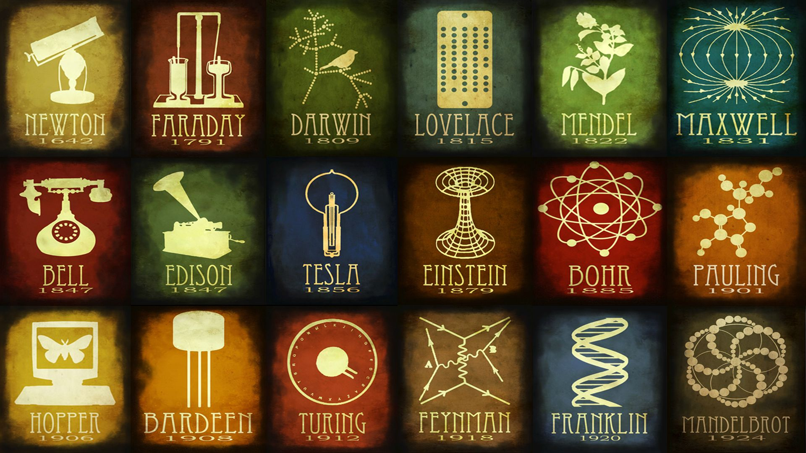
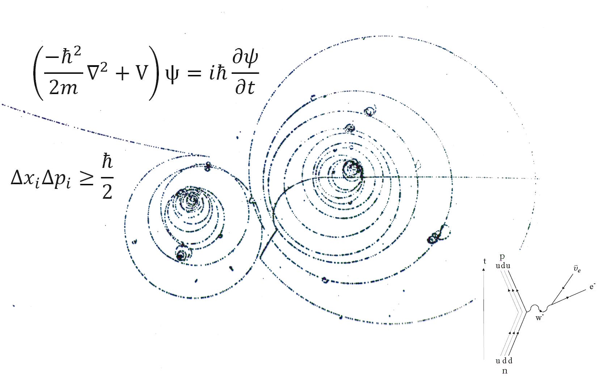

Liceo Scientifico Delle Scienze Applicate “Alle Stimate”
Il Liceo Scientifico Delle Scienze Applicate
è parte dell' Istituto "Alle Stimate", sito in Via Carlo
Montanari 1 a Verona.
È una versione del liceo
scientifico che rinuncia alle ore di latino in funzione
di più ore di scienze e di un corso di informatica.
L'orario settimanale è così suddiviso:
| Materia | Ore Settimanali |
|---|---|
| Scienze | 5 |
| Matematica | 4 |
| Italiano | 4 |
| Fisica | 3 |
| Inglese | 3 |
| Storia | 3 |
| Informatica | 2 |
| Educazione Fisica | 2 |
| Disegno Tecnico | 1 |
| Storia dell'Arte | 1 |
| Religione | 1 |

